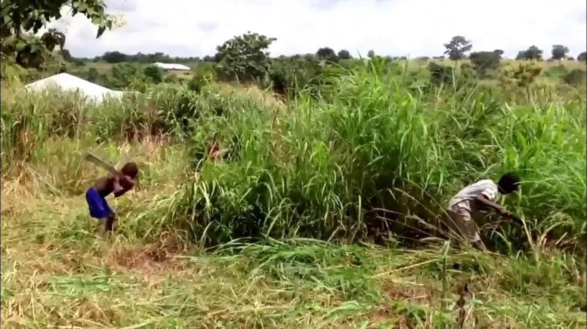
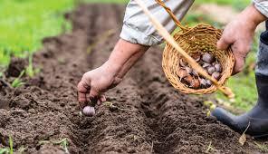
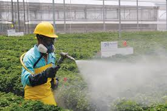

AGRICULTURAL PRACTICE
Pre-planting operation

what is pre-planting operation
Pre-planting operations can be define as the tasks you do before planting seeds or seedlings.
These steps help prepare the soil and ensure good conditions for plants to grow.
These operations include :
-
Land Preparation : Clear the field of weeds, rocks, and old plants. Plow, till, and level the soil to make it ready for planting.
-
Soil Testing : Check the soil's pH and nutrient levels. Add lime, compost, or fertilizers if needed to improve soil quality.
-
Seed Selection and Treatment :Choose high-quality seeds that grow well in your area. Treat seeds with chemicals if needed to protect them from diseases and pests.
-
Irrigation Planning : Plan how you will water the crops. Set up and check irrigation systems to make sure they work well.
-
Equipment Check :Inspect and prepare your tools and machinery, like tractors and seeders, to ensure they are in good condition for planting.
planting operation

what is planting operation
Planting operations can be define as a process of putting seeds or young plants into the ground
and ensuring they have the right conditions to grow.
These operations include :
-
Sowing Seeds : Plant seeds at the right depth and spacing, either by hand or with a machine.
-
Transplanting Seedlings : Move young plants to the field, keeping the right distance between them.
-
Fertilizer Application : Add fertilizers to provide necessary nutrients for the plants.
-
Irrigation Planning : Plan how you will water the crops. Set up and check irrigation systems to make sure they work well.
- Watering : Water the plants to help them start growing.
- Mulching : Add mulch around the plants to keep the soil moist and reduce weeds.
post-planting operation

what is post-planting operation
Post-planting operations can be define as taking care of plants
after they are in the ground to ensure they grow well and produce a good harvest.
These operations include :
-
Weed Control:Remove weeds regularly to reduce competition for resources.
-
Irrigation Management : Water plants consistently based on their needs and weather conditions.
-
Pest and Disease Management : Check for and manage pests and diseases using various methods.
-
Nutrient Management : Add fertilizers as needed to keep plants healthy.
-
Pruning and Training : Trim and shape plants to improve growth and airflow.
-
Mulching : Maintain mulch to retain moisture and control weeds.
-
Thinning : Remove extra plants to ensure proper spacing.
-
Staking and Support : Provide supports for plants that need help staying upright.
-
Harvesting : Pick crops when they are ready to ensure the best quality.
-
Post-Harvest Handling : Handle and store crops carefully to maintain their quality.